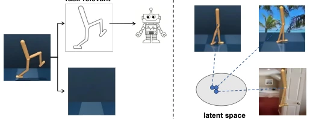
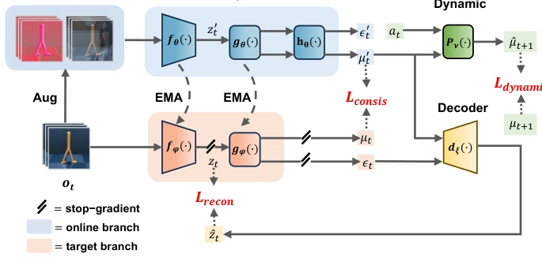
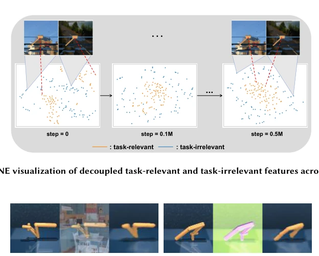
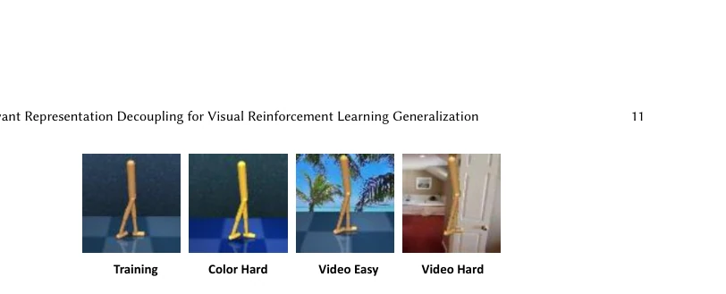
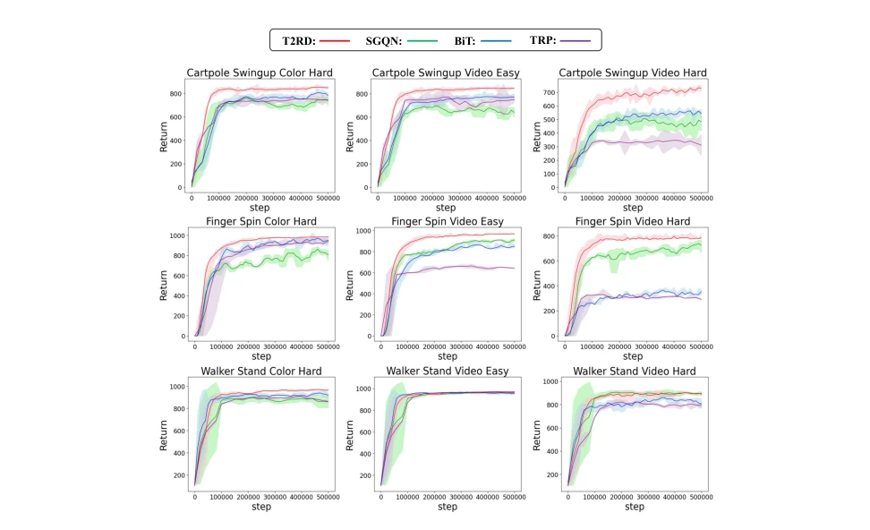
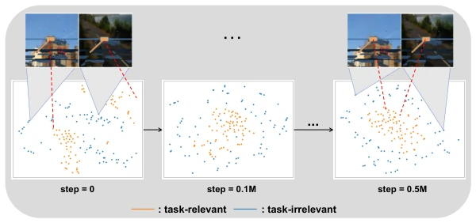
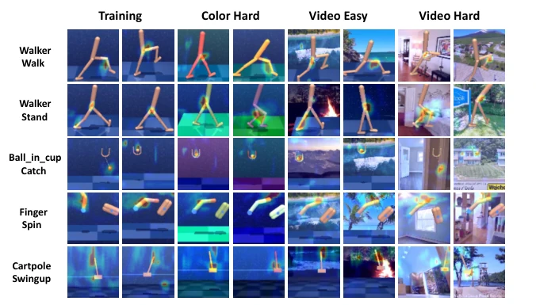
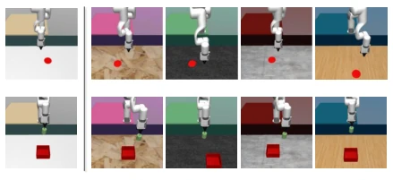
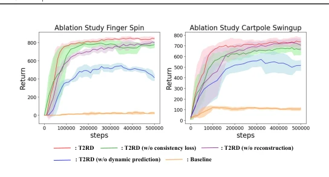

这篇论文给 VRL 的泛化难题又添了一块砖。作者把“任务相关”和“任务无关”特征解耦，听起来很性感，实际上就是搞了个自监督预训练再喂给 SAC。虽然 DMControl 和机械臂实验确实刷榜了，但“任务相关”的定义全靠动态预测硬约束，万一环境动态本身有噪声咋办？而且这种双分支 EMA 结构，推理时虽然只用了相关特征，训练成本可不低。最有趣的是他们把“随机卷积”和“随机叠加”组合起来，简单粗暴地解决了数据增强单一带来的泛化偏差，这招其实比解耦本身更值得普通 RL 选手借鉴。总的来说，是个扎实的工程改进，但理论上的“任务相关性”保证是否过于理想化，还得看更多复杂物理环境的验证。
This paper adds another brick to the generalization challenge of VRL. The authors decouple 'task-related' and 'task-irrelevant' features, which sounds appealing, but in reality, it is just performing self-supervised pre-training and feeding it to SAC. Although the DMControl and robotic arm experiments indeed topped the leaderboard, the definition of 'task-related' relies entirely on hard constraints from dynamic prediction; what if the environment dynamics themselves contain noise? Moreover, for this dual-branch EMA structure, although only related features are used during inference, the training cost is not low. Most interestingly, they combine 'random convolution' and 'random stacking' to simply and crudely solve the generalization bias caused by single data augmentation; this trick is actually more worth learning for ordinary RL practitioners than the decoupling itself. Overall, it is a solid engineering improvement, but whether the theoretical 'task relevance' guarantee is too idealized remains to be seen with verification in more complex physical environments.
研究动机Motivation
视觉强化学习 (VRL) 在控制任务上虽成功，但泛化仍是拦路虎。智能体容易过拟合训练环境中的任务无关特征，比如背景颜色或纹理，导致策略在测试环境失效。现有方法主要分为两类：一是数据增强，如 RAD [19] 和 DrQ [44]，试图覆盖环境变化，但单一增强易导致泛化偏差；二是自监督辅助任务，如 CURL [20] 和 SODA [14]，学习不变表示，但并未显式剥离无关信息。正如论文指出，这些方法得到的表示仍可能包含干扰特征。此外，基于视觉基础模型的方法（如 PIE-G [47]）虽能分割前景，但物体本身的纹理颜色仍可能无关。因此，显式解耦任务相关与无关特征，仅利用前者学习策略，是提升泛化性和样本效率的关键。
Visual Reinforcement Learning (VRL) is successful in control tasks, but generalization remains a major hurdle. Agents tend to overfit task-irrelevant features in the training environment, such as background colors or textures, causing policies to fail in test environments. Existing methods are mainly divided into two categories: one is data augmentation, such as RAD [19] and DrQ [44], attempting to cover environmental changes, but single augmentation easily leads to generalization bias; the second is self-supervised auxiliary tasks, such as CURL [20] and SODA [14], learning invariant representations, but not explicitly stripping irrelevant information. As the paper points out, the representations obtained by these methods may still contain interfering features. Additionally, methods based on visual foundation models (such as PIE-G [47]) can segment foreground, but the texture and color of the object itself may still be irrelevant. Therefore, explicitly decoupling task-related and irrelevant features, and utilizing only the former to learn policies, is key to improving generalization and sample efficiency.

Fig. 1. The core idea of our method. We decouple the visual observation into task-relevant representation and task-irrelevant representation. Task-relevant representations have domain-invariant properties, allowing them to generalize well across different domains.
T2RD adopts a dual-branch architecture (Online and Target), inspired by BYOL [10]. The overall process is: input observations enter the Online branch after data augmentation (random convolution + random stacking), while original observations enter the Target branch. The core contains three self-supervised modules: 1) Task-related representation consistency: enforce consistency of content features μ before and after augmentation, excluding style interference; 2) Cross-reconstruction: reconstruct the original latent variable z using augmented content μ' and original style ε, forcing content purity; 3) Dynamic prediction: use augmented content μ' and action a to predict next state content μ_t+1, ensuring features have behavioral predictiveness. Finally, only the task-related representation μ is input to SAC [11] for policy learning. Target branch parameters are slowly updated via EMA to prevent collapse. This design combines visual decoupling with RL dynamic constraints, theoretically approaching bisimulation metric [8].

Fig. 2. Overview of our model. Our model includes two branches: the online branch and the target branch. T2RD consists of three components: task-relevant representation consistency, cross-reconstruction, and cross- dynamic prediction. Our objective is to achieve the decoupling of task-relevant and task-irrelevant features through the above three modules. Subsequently, only the task-relevant features are used for policy learning.

Fig. 10. Cross-reconstruction visualization. We use the task-relevant features (content) 𝜇′ 𝑡from the augmented observation 𝑜′ 𝑡and the task-irrelevant features (style) 𝜖𝑡from the original observation to perform cross-reconstruction, obtaining the reconstructed image ˆ𝑜𝑡. Successful reconstruction indicates that the T2RD learns truly decoupled representations.
实验Experiments
实验在 DeepMind Control Suite Generalization Benchmark (DMControl-GB) 和 Robotic Manipulation 上进行。测试环境包括 Color Hard 和 Video Hard 等视觉干扰设置。基线包括 DrQ [44], SODA [14], SVEA [13], TLDA [46], PIE-G [47], SGQN [1], BiT [15], TRP [37], Visarl [23]。主要指标为回合回报和样本效率。结果显示 T2RD 在 DMControl 的 15 个任务中有 9 个取得最佳性能，Cartpole Swingup Video Hard 提升 33%；机械臂任务中 8 个环境有 7 个最优。消融实验表明，移除动态预测模块会导致性能显著下降，证明其对任务相关性的约束至关重要。t-SNE 可视化证实了任务相关特征聚类紧密，无关特征分散。
Experiments are conducted on the DeepMind Control Suite Generalization Benchmark (DMControl-GB) and Robotic Manipulation. Test environments include visual interference settings such as Color Hard and Video Hard. Baselines include DrQ [44], SODA [14], SVEA [13], TLDA [46], PIE-G [47], SGQN [1], BiT [15], TRP [37], Visarl [23]. The main metrics are episode return and sample efficiency. Results show that T2RD achieves the best performance in 9 out of 15 DMControl tasks, with a 33% improvement on Cartpole Swingup Video Hard; in robotic arm tasks, 7 out of 8 environments show optimal performance. Ablation experiments indicate that removing the dynamic prediction module leads to a significant performance drop, proving its constraint on task relevance is crucial. t-SNE visualization confirms that task-related features cluster tightly, while irrelevant features are scattered.

Fig. 5. Examples of DMControl-GB. We separately present the training example observations and three test settings: “Color Hard”, “Video Easy” and “Video Hard”.

Fig. 7. Test curves on DMControl-GB. We compare the test curves of T2RD with SGQN, BiT, and TRP on three tasks in DMControl-GB: “Cartpole Swingup”, “Finger Spin”, and “Walker Stand”, across three different environmental settings: Color Hard, Video Easy, and Video Hard.

Fig. 9. t-SNE visualization of decoupled task-relevant and task-irrelevant features across training steps.

Fig. 11. Visualizations of attention maps. We visualize the attention areas of our algorithm under different backgrounds in DMControl-GB.

Fig. 12. Examples of Robotic Manipulation. We present training example observations and four test settings for the “Reach” and “Peg in box” tasks.

Fig. 13. Ablation Study on DMControl-GB. We conduct ablation studies on the “Cartpole Swingup” and “Finger Spin” tasks under the “Video Hard” setting.